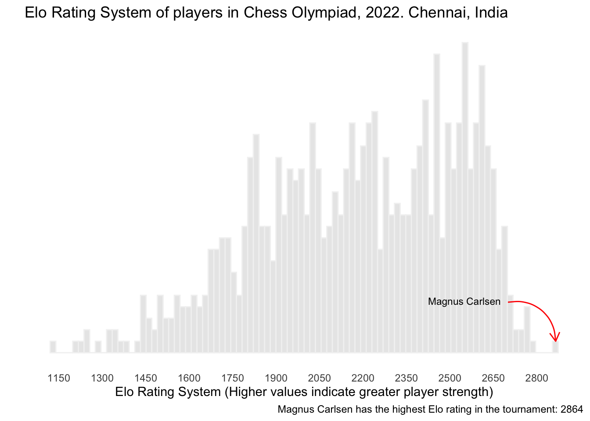

Warning: package 'scales' was built under R version 4.2.3
Warning: package 'dplyr' was built under R version 4.2.3
Warning: package 'ggplot2' was built under R version 4.2.3
Warning: package 'recipes' was built under R version 4.2.3
Warning: package 'tidyr' was built under R version 4.2.3
Warning: package 'yardstick' was built under R version 4.2.3
The ELO rating system is a method used to calculate the relative skill levels of chess players, based on their game results. A higher ELO rating indicates a higher perceived skill level.
In this document, the ELO difference between two players is used to evaluate the probability of one player winning the match.
I will use the The ChessOlympiad package. It contains two datasets: players and results. The players dataset contains the ELO ratings of all players participating in the 44th Chess Olympiad, which took place in Chennai, India, in 2022. The results dataset contains the results of all matches played in the tournament.
Distribution of ELO
Code
data("players")
First, let’s visualize the ELO distribution of the players.
It is important to filter out players with an ELO rating of zero from the analysis, as these players have not yet been rated and do not have a known skill level.
Code
players |>filter(rtg!=0) |>ggplot(aes(rtg)) +geom_histogram(bins=90,fill="gray90", alpha=0.85, color="gray95") +scale_x_continuous(breaks =seq(1000,2900,150))+theme_minimal() +theme(axis.text.y =element_blank(),panel.grid =element_blank()) +labs(x="Elo Rating System (Higher values indicate greater player strength)",y="",title ="Elo Rating System of players in Chess Olympiad, 2022. Chennai, India ",caption ="Magnus Carlsen has the highest Elo rating in the tournament: 2864") +geom_text(data = players %>%filter(rtg >2800),aes(x =2550, y =4.5, label ="Magnus Carlsen"),size =3,color ="black") +geom_curve(data = players %>%filter(rtg >2800),aes(x =2700, y =4.4, xend =2864.8, yend =1),arrow =arrow(length =unit(0.3, "cm")),color ="red",linewidth =0.5,curvature =-0.5)

It may be interesting to plot the ELO ratings of players by federation, as the Chess Olympiad is played by national teams. By examining the ELO ratings of players within each federation, we can get a sense of the overall strength of the teams participating in the event. This analysis could potentially provide insight into the results of the Chess Olympiad and help predict the outcomes of matches.
According to ELO ratings, the United States fielded the strongest team in the tournament.
Code
data("results")
Differences in ELO by round
The Chess Olympiad followed a Swiss-style tournament, meaning that players are paired with opponents with similar scores in each round. Specifically, in the first round, the highest-ranked player is matched against the median-ranked player, followed by the second-highest ranked player against the next below median, and so forth.
A visual representation of the differences in ELO by round are presented in the following graph.
Model the winning chances for players with the white pieces based on ELO difference
Now, let’s try to identify the optimal divisions in ELO rating differences that could potentially classify the outcomes of chess games. For this, I will be using the tidymodels package to estimate a Classification and Regression Trees (CART) model.
I will add two steps in the recipe. One to filter the data set by round, and the other to convert results in a factor variable. I also will limit my analysis to players with more than 1600 in ELO.
..y Dra Los Won cover
Draw [.45 .30 .25] when elo_difference is -176 to 85 51%
Draw [.55 .09 .36] when elo_difference >= 333 4%
Draw [.69 .15 .15] when elo_difference is 95 to 115 4%
Lost [.29 .61 .10] when elo_difference < -176 20%
Won [.10 .30 .60] when elo_difference is 85 to 95 3%
Won [.17 .20 .63] when elo_difference is 115 to 333 18%
The color-coding of the decision tree leaves suggests that differences in ELO ratings remain a critical factor, even in the final round of the chess tournament. It seems that the model is particularly adept at predicting outcomes when the ELO differences are substantial. For example, if you have more than 333 points in ELO, the model predicts 63% wining chances for you. However, if the ELO difference is less than 333 (but more than 115), the model predicts 55% of draw.
When the ELO difference is less than 115, the model’s predictions become more interesting. If a player has 176 points less than their opponent, the model is more likely to classify them as a loser (61%). However, if the ELO difference is less than 85 points, the player still has a good chance of winning the game. This could be seen as an indicator of the performance of some players with lower ELO ratings who are having a strong tournament. On the other hand, if the ELO difference is greater than 85 points, most of the chances are for a draw.
This serves as a quick demonstration of how the ChessOlympiad package can be utilized in predictive modeling.